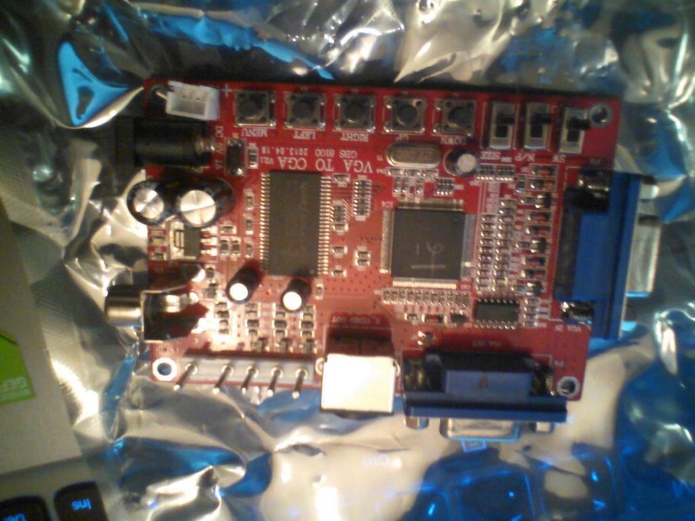

https://twitter.com/sgtruck/status/565828443586441216 @sgtruck Yup, sadly it is a conga line of dongles to get a 15k 320x240 RGB signal out of the PI to drive a proper arcade monitor.
VGA to CGA converter is here which means I can now upgrade my arcade machine from an old Xbox to a #raspberrypi

Heading off to #bradford #badonkadonk to find us look for the large white guy with a stupid beard braid. http://xixs.com/badonkadonk
@magic_bane The C64 version used 12 as punch kick buttons or something didn't it? Cant remember if it was joystick + keyboard control.
Hmm, are arcade boards ancient relics now? Maybe I should have some framed to hang on the wall or something.
I actually have a real Renegade JAMMA board. That game introduced a lot of the side brawler mechanics https://www.youtube.com/watch?v=-5Rb58WNIgA
https://twitter.com/wetgenes/status/565548580471967746 @madgarden yup, I remember playing this one as well https://www.youtube.com/watch?v=_XQ0Y43N9AY
https://twitter.com/madgarden/status/565548081346011138 @madgarden it is entirely possible the two games have fused in my memory :)
side scrolling brawlers that are not double dragon https://www.youtube.com/watch?v=fOsKrbqUeLk my silly brain remembers it having in/out movement.
The #bradford #gamedev casual meetup is in T-minus four hours at The Titus Salt pub. More details at -> http://xixs.com/badonkadonk
https://twitter.com/ToejamGreg/status/565315565401931777 @ToejamGreg oh thanks :) My email is kriss@xixs.com and I'll look forward to hearing from him.
@ekoner Oh noes, that podcast thingy is something else -> @itstuffradio has nothing to do with the #badonkadonk which is 100% super secrets.
https://twitter.com/sgtruck/status/564790200220786688 @sgtruck Yes, roughly 200% ass. Or having a nice sit down and a chat as I prefer to think of it.
@ekoner you're planning on gate crashing? That's quite easy, all you have to do is sit at the next table and pretend to read the paper.
#Bradford #Badonkadonk This wednesday http://xixs.com/badonkadonk local informal #gamedev meetup and chat in a pub 7-9pm at Sir Titus Salt.
https://twitter.com/wetgenes/status/564411194052997120 @ToejamGreg Recently we seem to be doing pixel talks to "art" types. So would love to learn dev secrets about the origins of DPaint :)
https://twitter.com/ToejamGreg/status/564191786814283777 @ToejamGreg I really had not even considered talking to Dan. which would actually be wonderful :) https://www.youtube.com/watch?v=gXN1yxax448
https://twitter.com/shi/status/564088715455524864 @shi Well Fatman is obviously a super hero born in vault 10. Does that count?
https://twitter.com/shi/status/563891654810402816 @shi If I add a paunch and call him fatman. Can we keep him?